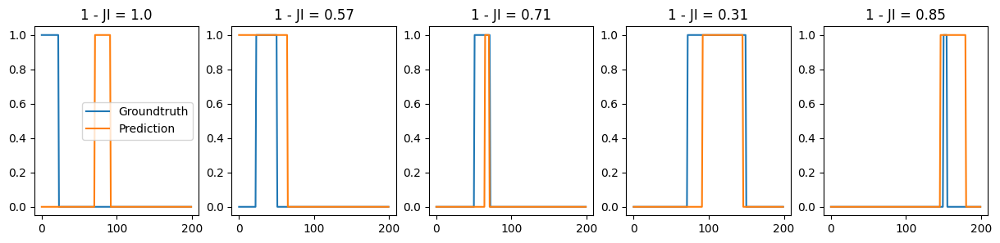

fig, axs = plt.subplots(3, 3, figsize = (9, 5), tight_layout = True)
window_size = 5
min_seg = 3
for ax in axs.flatten():
traj, labs = models_phenom()._multiple_state_traj(T = 50, alphas = [0.7, 0.8], Ds = [0.01, 0.1],
M = [[0.50, 0.50], [0.5, 0.5]])
filtered_d = label_filter(labs[:,1],
min_seg = min_seg,
window_size = window_size)
ax.plot(labs[:, 1], '.', label = 'True label')
ax.plot(filtered_d, label = r'Filtered label')
axs[0,0].set_title(f'Majority filter with window size = {window_size}')
axs[0,0].legend()
plt.setp(axs, xticklabels = [], yticklabels = []);utils_challenge
Managing data
Smoothing labels
These functions are used to smooth a given vector of labels of heterogeneous processes by means of majority filter. It allows to define a minimum segment length.
label_filter
label_filter (label:numpy.ndarray, window_size:int=5, min_seg:int=3)
Given a vector of changing labels, applies a majority filter to smoothen it. Then, enforces that the minimum segment of a particular label is bigger or equal to the given minimum segment length min_seg.
| Type | Default | Details | |
|---|---|---|---|
| label | ndarray | Vector to filter by majority vote | |
| window_size | int | 5 | Size of the window in which the majority filter is applied. |
| min_seg | int | 3 | Minimum segment allowed in the output array |
| Returns | ndarray | Filtered label vector |
Example
We create a set of trajectories from models_phenom.multi_state with a high probability of changing states. This makes segments very short. We filter them to ensure that there is not segment smaller than the desired one.
New population percentages after filtering
Note that smoothing the signal will have an effect on the actual proportion of time a particle spends in each state. This will be taken into account in the challenge. Here we showcase this effect:
T = 100
traj, labs = models_phenom().multi_state(N = 500, alphas = [[0.7, 1],[0.4,2]], Ds = [[0, 1], [1, 0]], T = T)res_t = np.array([])
res_ft = np.array([])
for label in tqdm(labs.transpose(1,0,2)[:,:,0]):
# raw labels
CP = np.argwhere(label[1:] != label[:-1]).flatten()
if CP[-1] != 199: CP = np.append(CP, T-1)
CP = np.append(0, CP)
res_t = np.append(res_t, CP[1:] - CP[:-1])
# filtered labels
filt = label_filter(label)
CP_f = np.argwhere(filt[1:] != filt[:-1]).flatten()
if CP_f[-1] != 199: CP_f = np.append(CP_f, T-1)
CP_f = np.append(0, CP_f)
res_ft = np.append(res_ft, CP_f[1:] - CP_f[:-1])We show now the new transition rates (e.g. 1 over the residence time of a given state). Because we are minimum segment length of 3, we can actually approximate the filtered transition rate as the original times 2/3:
print(f' True transition rate: {1/np.mean(res_t)}\n',
f'Filtered transition rate: {1/np.mean(res_ft)}\n',
f'True rate x 2/3: {1/np.mean(res_t)*(2/3)}') True transition rate: 0.10947474747474747
Filtered transition rate: 0.07402020202020201
True rate x 2/3: 0.07298316498316498Continuous labels to list of features
The labels in the challenge will be the list of \(n\) changepoints as well as the \(n+1\) diffusion properties (\(D\) and \(\alpha\)) for each segment. This function transforms the stepwise labels into three lists: CPs, \(\alpha\)s and \(D\)s.
label_continuous_to_list
label_continuous_to_list (labs)
Given an array of T x 2 labels containing the anomalous exponent and diffusion coefficient at each timestep, returns 3 arrays, each containing the changepoints, exponents and coefficient, respectively. If labs is size T x 3, then we consider that diffusive states are given and also return those.
| Type | Details | |
|---|---|---|
| labs | array | T x 2 or T x 3 labels containing the anomalous exponent, diffusion and diffusive state. |
| Returns | tuple | - First element is the list of change points - The rest are corresponding segment properties (order: alpha, Ds and states) |
# Generate the trajectory
trajs, labels = models_phenom().multi_state(N = 1, T = 50)
# Transform the labels:
CP, alphas, Ds, _ = label_continuous_to_list(labels[:,-1,:])
plt.figure(figsize=(5, 3))
plt.plot(labels[:, -1, 1], 'o', alpha = 0.4, label = 'Continuous label')
plt.scatter(CP-1, Ds, c = 'C1', label = 'CP-1 and value of previous segment')
plt.legend(); plt.xlabel('T'); plt.ylabel(r'$\alpha$')Text(0, 0.5, '$\\alpha$')List of features to continuous labels
This function does the opposite from than label_continuous_to_list. From a list of properties as the one used in ANDI 2 challenge, creates continuous labels.
label_list_to_continuous
label_list_to_continuous (CP, label)
Given a list of change points and the labels of the diffusion properties of the resulting segments, generates and array of continuous labels. The last change point indicates the array length.
| Type | Details | |
|---|---|---|
| CP | array, list | list of change points. Last change point indicates label length. |
| label | array, list | list of segment properties |
| Returns | array | Continuous label created from the given change points and segment properties |
CP = [3,24,34]
label = [0.5, 0.4, 1]
cont = label_list_to_continuous(CP, label)
plt.figure(figsize = (3,1))
plt.plot(cont, c = 'C1')
[plt.axvline(c, c = 'k', ls = '--') for c in CP[:-1]];Storing array data in dataframe
array_to_df
array_to_df (trajs, labels, min_length=10, fov_origin=[0, 0], fov_length=100.0, cutoff_length=10)
Given arrays for the position and labels of trajectories, creates a dataframe with that data. The function also applies the demanded FOV. If you don’t want a field of view, chose a FOV length bigger (smaller) that your maximum (minimum) trajectory position.
| Type | Default | Details | |
|---|---|---|---|
| trajs | array | Trajectories to store in the df (dimension: T x N x 3) | |
| labels | array | Labels to store in the df (dimension: T x N x 3) | |
| min_length | int | 10 | |
| fov_origin | list | [0, 0] | Bottom left point of the square defining the FOV. |
| fov_length | float | 100.0 | Size of the box defining the FOV. |
| cutoff_length | int | 10 | Minimum length of a trajectory inside the FOV to be considered in the output dataset. |
| Returns | tuple | - df_in (dataframe): dataframe with trajectories - df_out (datafram): dataframe with labels |
#trajs, labels = models_phenom().multi_state(T = 200, N = 10, alphas=[0.5, 1], Ds = [1,1], L = 100)
trajs, labels = models_phenom().single_state(T = 200, N = 10)
# Changing dimensions
trajs = trajs.transpose((1, 0, 2)).copy()
labels = labels.transpose(1, 0, 2)
df_in, df_out = array_to_df(trajs, labels)df_out.head()| traj_idx | Ds | alphas | states | changepoints | |
|---|---|---|---|---|---|
| 0 | 0 | [1.0] | [1.0] | [2.0] | [115] |
| 1 | 1 | [1.0] | [1.0] | [2.0] | [22] |
| 2 | 2 | [1.0] | [1.0] | [2.0] | [10] |
| 3 | 3 | [1.0] | [1.0] | [2.0] | [39] |
| 4 | 4 | [1.0] | [1.0] | [2.0] | [28] |
Transform ANDI dataframe to array with padding
df_to_array
df_to_array (df, pad=-1)
Transform a dataframe as the ones given in the ANDI 2 challenge (i.e. 4 columns: traj_idx, frame, x, y) into a numpy array. To deal with irregular temporal supports, we pad the array whenever the trajectory is not present. The output array has the typical shape of ANDI datasets: TxNx2
| Type | Default | Details | |
|---|---|---|---|
| df | dataframe | Dataframe with four columns ‘traj_idx’: the trajectory index, ‘frame’ the time frame and ‘x’ and ‘y’ the positions of the particle. |
|
| pad | int | -1 | Number to use as padding. |
| Returns | array | Array containing the trajectories from the dataframe, with usual ANDI shape (TxNx2). |
Reorganize folder for challenge if non-overlapping FOVS
The outputs of datasets_challenge.challenge_phenom_dataset are not in the appropriate form if one considers the case of non-overlapping FOVS. The latter means that instead of taking n_fovs from the same experiment, we repeat the same experiment n_fovs times. This functions rearranges the folders to get the proper structure proposed in the paper.
file_nonOverlap_reOrg
file_nonOverlap_reOrg (raw_folder:pathlib.Path, target_folder:pathlib.Path, experiments:int, num_fovs:int, tracks=[1, 2], save_labels=False, task=['single', 'ensemble'], print_percentage=True)
This considers that you have n_fovs*n_experiments ‘fake’ experiments and organize them based on the challenge instructions
| Type | Default | Details | |
|---|---|---|---|
| raw_folder | Path | Original folder with data produced by datasets_challenge.challenge_phenom_dataset | |
| target_folder | Path | Folder where to put reorganized files | |
| experiments | int | Number of experiments | |
| num_fovs | int | Number of FOVS | |
| tracks | list | [1, 2] | Track to consider |
| save_labels | bool | False | If True, moves all data (also labels,.. etc). Do True only if saving reference / groundtruth data. Moreover, if True also save the trajectories for the video track |
| task | list | [‘single’, ‘ensemble’] | Which task to consider |
| print_percentage | bool | True | If True prints, the percentage of states for each experiment |
Isolate VIP particles
get_VIP
get_VIP (array_trajs, num_vip=5, min_distance_part=2, pad=-1, boundary=False, boundary_origin=(0, 0), min_distance_bound=0, sort_length=True)
Given an array of trajectories, finds the particles VIP particles that participants will need to characterize in the video trakcl.
The function first finds the particles that exist at frame 0 (i.e. that their first value is different from pad). Then, iterates over this particles to find num_vip that are at distance > than min_distance_part in the first frame.
| Type | Default | Details | |
|---|---|---|---|
| array_trajs | array | Position of the trajectories that will be considered for the VIP search. | |
| num_vip | int | 5 | Number of VIP particles to flag. |
| min_distance_part | int | 2 | Minimum distance between two VIP particles. |
| pad | int | -1 | Number used to indicate in the temporal support that the particle is outside of the FOV. |
| boundary | bool | False | If float, defines the length of the box acting as boundary |
| boundary_origin | tuple | (0, 0) | X and Y coords of the boundary |
| min_distance_bound | int | 0 | Minimum distance a particles has to be from the boundary in ordered to be considered a VIP particle |
| sort_length | bool | True | If True, candidates for VIP particles are choosen in descending trajectory length. This ensures that the longest ones are chosen. |
| Returns | list | List of indices of the chosen VIP particles |
# define random trajectories
array_trajs = np.random.rand(200,10, 2)*10
# insert paddings to make first trajectories finish earlier
pad = -1
array_trajs[100, :,:] = pad
array_trajs[0,3,0] = pad
array_trajs.shape(200, 10, 2)get_VIP(array_trajs, num_vip = 5, min_distance_part = 0, pad = pad,
boundary = 10, boundary_origin = (0,0), min_distance_bound = 0,
sort_length = True)[0, 1, 2, 4, 5]ANDI 2 challenge metrics
Setting maximum erros for different metrics
Changepoint pairing
We use an assignment algorithm to pair predicted and groundtruth changepoints. From there, we will calculate the various metrics of the challenge.
changepoint_assignment
changepoint_assignment (GT, preds)
Given a list of groundtruth and predicted changepoints, solves the assignment problem via the Munkres algorithm (aka Hungarian algorithm) and returns two arrays containing the index of the paired groundtruth and predicted changepoints, respectively.
The distance between change point is the Euclidean distance.
| Type | Details | |
|---|---|---|
| GT | list | List of groundtruth change points. |
| preds | list | List of predicted change points. |
| Returns | tuple | - tuple of two arrays, each corresponding to the assigned GT and pred changepoints - Cost matrix |
ngts = 10; npreds = 6; T = 100
GT = np.sort(np.random.choice(np.arange(1,T), ngts, replace = False))
preds = np.sort(np.random.choice(np.arange(1,T)*0.5, npreds, replace = False)).astype(int)
print('GT:', GT)
print('Pred:', preds)
changepoint_assignment(GT, preds)[0]GT: [ 2 8 24 33 34 54 55 64 73 85]
Pred: [ 8 11 16 30 36 47](array([0, 1, 2, 3, 4, 5], dtype=int64),
array([1, 0, 2, 3, 4, 5], dtype=int64))changepoint_alpha_beta
changepoint_alpha_beta (GT, preds, threshold=10)
Calculate the alpha and beta measure of paired changepoints. Inspired from Supplemantary Note 3 in https://www.nature.com/articles/nmeth.2808
| Type | Default | Details | |
|---|---|---|---|
| GT | list | List of groundtruth change points. | |
| preds | list | List of predicted change points. | |
| threshold | int | 10 | Distance from which predictions are considered to have failed. They are then assigned this number. |
| Returns | tuple | alpha, beta |
labels = [r'Random Guess + $N_p>N_{gt}$',
r'Random Guess + $N_p<N_{gt}$',
r'GT + rand $\in [-3, 3]$',
r'GT + rand $\in [-1, 1]$']
fig, ax = plt.subplots(figsize = (4,3))
alpha = 0.2
T = 200; ngts = 15;
for case, (label, color) in enumerate(zip(labels, ['C0', 'C1', 'C2', 'C3'])):
alphas, betas = [], []
for _ in range(100):
GT = np.sort(np.random.choice(np.arange(1,T), ngts, replace = False))
if case == 0:
npreds = np.random.randint(low = ngts, high = ngts*2)
preds = np.sort(np.random.choice(np.arange(1,T), npreds, replace = False))
elif case == 1:
npreds = np.random.randint(low = 1, high = ngts)
preds = np.sort(np.random.choice(np.arange(1,T), npreds, replace = False))
elif case == 2:
preds = GT + np.random.randint(-3, 3, ngts)
elif case == 3:
preds = GT + np.random.randint(-1, 1, ngts)
alpha, beta = changepoint_alpha_beta(GT, preds)
alphas.append(alpha)
betas.append(beta)
ax.scatter(alphas, betas, c = color, alpha = alpha)
ax.scatter(np.mean(alphas), np.mean(betas), c = color, label = label, s = 50, marker = 's', edgecolors = 'k')
plt.setp(ax, xlabel = r'$\alpha$', ylabel = r'$\beta$')
ax.legend(loc = (1.01,0.4))<matplotlib.legend.Legend>jaccard_index
jaccard_index (TP:int, FP:int, FN:int)
Given the true positive, false positive and false negative rates, calculates the Jaccard Index
| Type | Details | |
|---|---|---|
| TP | int | true positive |
| FP | int | false positive |
| FN | int | false negative |
| Returns | float | Jaccard Index |
single_changepoint_error
single_changepoint_error (GT, preds, threshold=5)
Given the groundtruth and predicted changepoints for a single trajectory, first solves the assignment problem between changepoints, then calculates the RMSE of the true positive pairs and the Jaccard index.
| Type | Default | Details | |
|---|---|---|---|
| GT | list | List of groundtruth change points. | |
| preds | list | List of predicted change points. | |
| threshold | int | 5 | Distance from which predictions are considered to have failed. They are then assigned this number. |
| Returns | tuple | - TP_rmse: root mean square error of the true positive change points. - Jaccard Index of the ensemble predictions |
ensemble_changepoint_error
ensemble_changepoint_error (GT_ensemble, pred_ensemble, threshold=5)
Given an ensemble of groundtruth and predicted change points, iterates over each trajectory’s changepoints. For each, it solves the assignment problem between changepoints. Then, calculates the RMSE of the true positive pairs and the Jaccard index over the ensemble of changepoints (i.e. not the mean of them w.r.t. to the trajectories)
| Type | Default | Details | |
|---|---|---|---|
| GT_ensemble | list, array | Ensemble of groutruth change points. | |
| pred_ensemble | list | Ensemble of predicted change points. | |
| threshold | int | 5 | Distance from which predictions are considered to have failed. They are then assigned this number. |
| Returns | tuple | - TP_rmse: root mean square error of the true positive change points. - Jaccard Index of the ensemble predictions |
labels = ['Random Guess + Incorrect number',
r'GT + rand $\in [-3, 3]$',
r'GT + rand $\in [-1, 1]$']
fig, ax = plt.subplots(figsize = (3,3))
alpha = 0.2
T = 200; ngts = 10; npreds = 8
for case, (label, color) in enumerate(zip(labels, ['C0', 'C1', 'C2'])):
rmse, ji = [], []
GT, preds = [], []
for _ in range(100):
GT.append(np.sort(np.random.choice(np.arange(1,T), ngts, replace = False)))
if case == 0:
preds.append(np.sort(np.random.choice(np.arange(1,T), npreds, replace = False)))
elif case == 1:
preds.append(GT[-1] + np.random.randint(-3, 3, ngts))
elif case == 2:
preds.append(GT[-1] + np.random.randint(-1, 1, ngts))
assignment, _ = changepoint_assignment(GT[-1], preds[-1])
assignment = np.array(assignment)
RMSE, JI = single_changepoint_error(GT[-1], preds[-1], threshold = 5)
rmse.append(RMSE)
ji.append(JI)
rmse_e, ji_e = ensemble_changepoint_error(GT, preds, threshold = 5)
ax.scatter(rmse, ji, c = color, alpha = alpha)
ax.scatter(rmse_e, ji_e, c = color, label = label, s = 50, marker = 's', edgecolors = 'k')
plt.setp(ax, xlabel = 'TP RMSE', ylabel = 'Jaccard')
ax.legend(loc = (0.91,0.4))<matplotlib.legend.Legend>Segments pairing
Here we focus on pairing the segments arising from a list of changepoints. We will use this to latter compare the predicted physical properties for each segment
create_binary_segment
create_binary_segment (CP:list, T:int)
Given a set of changepoints and the lenght of the trajectory, create segments which are equal to one if the segment takes place at that position and zero otherwise.
| Type | Details | |
|---|---|---|
| CP | list | list of changepoints |
| T | int | length of the trajectory |
| Returns | list | list of arrays with value 1 in the temporal support of the current segment. |
T= 50
GT = np.sort(np.random.choice(np.arange(1,T), 10, replace = False))
plt.figure(figsize = (4,3))
for idx, x in enumerate(create_binary_segment(GT, T)):
plt.plot(x*idx, 'o')jaccard_between_segments
jaccard_between_segments (gt, pred)
Given two segments, calculates the Jaccard index between them by considering TP as correct labeling, FN as missed events and FP leftover predictions.
| Type | Details | |
|---|---|---|
| gt | array | groundtruth segment, equal to one in the temporal support of the given segment, zero otherwise. |
| pred | array | predicted segment, equal to one in the temporal support of the given segment, zero otherwise. |
| Returns | float | Jaccard index between the given segments. |
segment_assignment
segment_assignment (GT, preds, T:int=None)
Given a list of groundtruth and predicted changepoints, generates a set of segments. Then constructs a cost matrix by calculting the Jaccard Index between segments. From this cost matrix, we solve the assignment problem via the Munkres algorithm (aka Hungarian algorithm) and returns two arrays containing the index of the groundtruth and predicted segments, respectively.
If T = None, then we consider that GT and preds may have different lenghts. In that case, the end of the segments is the the last CP of each set of CPs.
| Type | Default | Details | |
|---|---|---|---|
| GT | list | List of groundtruth change points. | |
| preds | list | List of predicted change points. | |
| T | int | None | Length of the trajectory. If None, considers different GT and preds length. |
| Returns | tuple | - tuple of two arrays, each corresponding to the assigned GT and pred changepoints - Cost matrix calculated via JI of segments |
Examples
Predictions close to groundtruth
T = 200;
ngts = 10;
GT = np.sort(np.random.choice(np.arange(1,T), ngts, replace = False))
preds = np.sort(GT + np.random.randint(-5, 5, 1) )
seg_GT = create_binary_segment(GT, T)
seg_preds = create_binary_segment(preds, T)
[row_ind, col_ind], cost_matrix = segment_assignment(GT, preds, T)
fig, axs = plt.subplots(2, 5, figsize = (15, 6))
for r, c, ax in zip(row_ind, col_ind, axs.flatten()):
ax.set_title(f'1 - JI = {np.round(cost_matrix[r, c], 2)}')
ax.plot(seg_GT[r], label = 'Groundtruth')
ax.plot(seg_preds[c], label = 'Prediction')
axs[0,0].legend()<matplotlib.legend.Legend>Different size between predictions and trues
T1 = 200; T2 = 100
ngts = 10;
GT = np.sort(np.random.choice(np.arange(1,T1), ngts, replace = False))
preds = np.sort(np.random.choice(np.arange(1,T2), 5, replace = False))
seg_GT = create_binary_segment(GT, T1)
seg_preds = create_binary_segment(preds, T2)
[row_ind, col_ind], cost_matrix = segment_assignment(GT, preds)
fig, axs = plt.subplots(1, 5, figsize = (15, 3))
for r, c, ax in zip(row_ind, col_ind, axs.flatten()):
ax.set_title(f'1 - JI = {np.round(cost_matrix[r, c], 2)}')
ax.plot(seg_GT[r], label = 'Groundtruth')
ax.plot(seg_preds[c], label = 'Prediction')
axs[0].legend()<matplotlib.legend.Legend>
Predictions very different to groundtruth
T = 200;
ngts = 5; npreds = 5;
GT = np.sort(np.random.choice(np.arange(1,T), ngts, replace = False))
preds = np.sort(np.random.choice(np.arange(1,T), npreds, replace = False))
seg_GT = create_binary_segment(GT, T)
seg_preds = create_binary_segment(preds, T)
[row_ind, col_ind], cost_matrix = segment_assignment(GT, preds, T)
fig, axs = plt.subplots(1, 5, figsize = (15, 3))
for r, c, ax in zip(row_ind, col_ind, axs.flatten()):
ax.set_title(f'1 - JI = {np.round(cost_matrix[r, c], 2)}')
ax.plot(seg_GT[r], label = 'Groundtruth')
ax.plot(seg_preds[c], label = 'Prediction')
axs[0].legend()<matplotlib.legend.Legend>
Segment properties comparison
We use the segment pairing functions that we have defined above to compute various metrics between the properties of predicted and groundtruth segments.
Metrics of segment properties
metric_diffusive_state
metric_diffusive_state (gt=None, pred=None)
Compute the F1 score between diffusive states.
metric_diffusion_coefficient
metric_diffusion_coefficient (gt=None, pred=None, threshold_min=1e-12, max_error=190.86835960820298)
Compute the mean squared log error (msle) between diffusion coefficients. Checks the current bounds of diffusion from models_phenom to calculate the maximum error.
metric_anomalous_exponent
metric_anomalous_exponent (gt=None, pred=None, max_error=1.999)
Compute the mean absolute error (mae) between anomalous exponents. Checks the current bounds of anomalous exponents from models_phenom to calculate the maximum error.
x = np.random.rand(100)
y = np.random.rand(100)metric_diffusion_coefficient(x+2,y+2, threshold_min=-2)0.014261449910975834Pairing and metrics calculation
check_no_changepoints
check_no_changepoints (GT_cp, GT_alpha, GT_D, GT_s, preds_cp, preds_alpha, preds_D, preds_s, T:bool|int=None)
Given predicionts over changepoints and variables, checks if in both GT and preds there is an absence of change point. If so, takes that into account to pair variables.
| Type | Default | Details | |
|---|---|---|---|
| GT_cp | list, int, float | Groundtruth change points | |
| GT_alpha | list, float | Groundtruth anomalous exponent | |
| GT_D | list, float | Groundtruth diffusion coefficient | |
| GT_s | list, float | Groundtruth diffusive state | |
| preds_cp | list, int, float | Predicted change points | |
| preds_alpha | list, float | Predicted anomalous exponent | |
| preds_D | list, float | Predicted diffusion coefficient | |
| preds_s | list, float | Predicted diffusive state | |
| T | bool | int | None | (optional) Length of the trajectories. If none, last change point is length. |
| Returns | tuple | - False if there are change points. True if there were missing change points. - Next three are either all Nones if change points were detected, or paired exponents, coefficient and states if some change points were missing. |
segment_property_errors
segment_property_errors (GT_cp, GT_alpha, GT_D, GT_s, preds_cp, preds_alpha, preds_D, preds_s, return_pairs=False, T=None)
Given predicionts over change points and the value of diffusion parameters in the generated segments, computes the defined metrics.
| Type | Default | Details | |
|---|---|---|---|
| GT_cp | list, int, float | Groundtruth change points | |
| GT_alpha | list, float | Groundtruth anomalous exponent | |
| GT_D | list, float | Groundtruth diffusion coefficient | |
| GT_s | list, float | Groundtruth diffusive state | |
| preds_cp | list, int, float | Predicted change points | |
| preds_alpha | list, float | Predicted anomalous exponent | |
| preds_D | list, float | Predicted diffusion coefficient | |
| preds_s | list, float | Predicted diffusive state | |
| return_pairs | bool | False | If True, returns the assigment pairs for each diffusive property. |
| T | NoneType | None | (optional) Length of the trajectories. If none, last change point is length. |
| Returns | tuple | - if return_pairs = True, returns the assigned pairs of diffusive properties - if return_pairs = False, returns the errors for each diffusive property |
We generate some random predictions to check how the metrics behave. We consider errors also in the change point predictions, hence there will be some segment mismatchings, which will affect the diffusive properties predictions:
T = 200;
ngts = 10;
errors_alpha = np.linspace(0, 1, ngts)
errors_d = np.linspace(0, 10, ngts)
errors_s = np.linspace(0, 1, ngts)
metric_a, metric_d, metric_s = [], [], []
for error_a, error_d, error_s in zip(errors_alpha, errors_d, errors_s):
la, ld, ls = [], [], []
for _ in range(100):
GT_cp = np.sort(np.random.choice(np.arange(1,T-1), ngts, replace = False))
preds_cp = np.sort(np.random.choice(np.arange(1,T-1), ngts, replace = False))
GT_alpha = np.random.rand(GT_cp.shape[0]+1)
preds_alpha = GT_alpha + np.random.randn(preds_cp.shape[0]+1)*error_a
GT_D = np.abs(np.random.randn(GT_cp.shape[0]+1)*10)
preds_D = GT_D + np.abs(np.random.randn(preds_cp.shape[0]+1))*error_d
GT_s = np.random.randint(0, 5, GT_cp.shape[0]+1)
coin = np.random.rand(len(GT_s))
preds_s = GT_s.copy()
preds_s[coin < error_s] = np.random.randint(0, 5, len(coin[coin < error_s]))
m_a, m_d, m_s = segment_property_errors(GT_cp, GT_alpha, GT_D, GT_s, preds_cp, preds_alpha, preds_D, preds_s, T = T)
la.append(m_a); ld.append(m_d); ls.append(m_s)
metric_a.append(np.mean(la))
metric_d.append(np.mean(ld))
metric_s.append(np.mean(ls))With no error in the changepoint predicitions:
fig, ax = plt.subplots(1, 3, figsize = (9, 3), tight_layout = True)
ax[0].plot(np.arange(ngts), errors_alpha, c = 'C0', ls = '--', label = 'Expected with no assigment error')
ax[0].plot(np.arange(ngts), metric_a, c = 'C0')
ax[0].set_title(r'Error in $\alpha$ (MAE)')
#ax[1].plot(np.arange(ngts), errors_d, c = 'C1', ls = '--')
ax[1].plot(np.arange(ngts), metric_d, c = 'C1')
ax[1].set_title(r'Error in $D$ (MSLE)')
ax[2].plot(np.arange(ngts), metric_s, c = 'C1')
ax[2].set_title(r'Error in states (JI)')
plt.setp(ax, xlabel = 'Error magnitude')[Text(0.5, 0, 'Error magnitude'),
Text(0.5, 0, 'Error magnitude'),
Text(0.5, 0, 'Error magnitude')]With error in the changepoint predicitions:
fig, ax = plt.subplots(1, 3, figsize = (9, 3), tight_layout = True)
ax[0].plot(np.arange(ngts), errors_alpha, c = 'C0', ls = '--', label = 'Expected with no assigment error')
ax[0].plot(np.arange(ngts), metric_a, c = 'C0')
ax[0].set_title(r'Error in $\alpha$ (MAE)')
#ax[1].plot(np.arange(ngts), errors_d, c = 'C1', ls = '--')
ax[1].plot(np.arange(ngts), metric_d, c = 'C1')
ax[1].set_title(r'Error in $D$ (MSLE)')
ax[2].plot(np.arange(ngts), metric_s, c = 'C1')
ax[2].set_title(r'Error in states (JI)')
plt.setp(ax, xlabel = 'Error magnitude')[Text(0.5, 0, 'Error magnitude'),
Text(0.5, 0, 'Error magnitude'),
Text(0.5, 0, 'Error magnitude')]
Ensemble metrics
Get ensemble information
extract_ensemble
extract_ensemble (state_label, dic)
Given an array of the diffusive state and a dictionary with the diffusion information, returns a summary of the ensemble properties for the current dataset.
| Type | Details | |
|---|---|---|
| state_label | array | Array containing the diffusive state of the particles in the dataset. For multi-state and dimerization, this must be the number associated to the state (for dimerization, 0 is free, 1 is dimerized). For the rest, we follow the numeration of models_phenom().lab_state. |
| dic | dict | Dictionary containing the information of the input dataset. |
| Returns | array | Matrix containing the ensemble information of the input dataset. It has the following shape: |mu_alpha1 mu_alpha2 … | |sigma_alpha1 sigma_alpha2 … | |mu_D1 mu_D1 … | |sigma_D1 sigma_D2 … | |counts_state1 counts_state2 … | |
Generate distribution and distances
multimode_dist
multimode_dist (params, weights, bound, x, normalized=False, min_var=1e-09)
Generates a multimodal distribution with given parameters. Also accounts for single mode if weight is float or int.
| Type | Default | Details | |
|---|---|---|---|
| params | list | Mean and variances of every mode. | |
| weights | list, float | Weight of every mode. If float, we consider a single mode. | |
| bound | tuple | Bounds (min, max) of the functions support. | |
| x | array | Support upon which the distribution is created. | |
| normalized | bool | False | |
| min_var | float | 1e-09 |
# True distribution
x = np.logspace(np.log10(models_phenom().bound_D[0]),
np.log10(models_phenom().bound_D[1]), 100)
weights = [0.0005,0.9]
params_true = [[0.0,0],[1.5,0.5]]
true = multimode_dist(params_true, weights, bound = models_phenom().bound_D, x = x, normalized = False, min_var=1e-9)
plt.semilogx(x, true)distribution_distance
distribution_distance (p:<built-infunctionarray>, q:<built- infunctionarray>, x:<built-infunctionarray>=None, metric='wasserstein')
Calculates distance between two distributions.
| Type | Default | Details | |
|---|---|---|---|
| p | array | distribution 1 | |
| q | array | distribution 2 | |
| x | array | None | support of the distributions (not needed for MAE) |
| metric | str | wasserstein | distance metric (either ‘wasserstein’ or ‘mae’) |
| Returns | float | distance between distributions |
Tests distance
Normal scenario
means = np.linspace(0, 2, 30)
normalize = False
fig = plt.figure(figsize=(15, 4))
gs = fig.add_gridspec(2, 10)
# True distribution
x = np.arange(0, 3, 0.01)
params = [[1.7,0.01]]
weights = [1]
true = multimode_dist(params, weights, bound = [0, 3], x = x, normalized = normalize)
range_x = (1,2)
idx_range = np.argwhere((x>range_x[0]) & (x<range_x[1])).flatten()
MSE = []
wass = []
for idx, mean in enumerate(means):
params = [[mean, 0.01]]
weights = [1]
pred = multimode_dist(params, weights, bound = [0, 3], x = x, normalized = normalize)
MSE.append(distribution_distance(true, pred, metric = 'mae'))
wass.append(distribution_distance(true, pred, x))
if idx % 3 == 0:
ax = fig.add_subplot(gs[0, int(idx/3)])
ax.plot(x, true, label = 'True')
ax.plot(x, pred, label = 'Predicted')
plt.setp(ax, yticks = []);
if idx == 0:
ax.legend()
ax.axvline(range_x[0])
ax.axvline(range_x[1])
ax_dist = fig.add_subplot(gs[1, :])
ax_dist.plot(MSE, '-o', label = 'MAE')
ax_dist.plot(wass, '-o', label = 'wasserstein')
ax_dist.legend()
plt.setp(ax_dist, ylabel = 'MAE')
ax_dist.grid()Having a variance = 0 (as in immobile)
Wasserstein:
means = np.linspace(0, 2, 30)
normalize = False
fig = plt.figure(figsize=(15, 7))
gs = fig.add_gridspec(4, 10)
# True distribution
x = np.arange(0, 3, 0.01)
weights = [0.3, 0.9]
params_var0 = [[0,0.0],[1,0.1]]
true_var0 = multimode_dist(params_var0, weights, bound = [0, 3], x = x, normalized = normalize)
params = [[0,0.1],[1,0.1]]
true = multimode_dist(params, weights, bound = [0, 3], x = x, normalized = normalize)
wass_var0 = []
wass = []
mae_var0 = []
mae = []
for idx, mean in enumerate(means):
params = [[mean, 0.01]]
weights = [1]
pred = multimode_dist(params, weights, bound = [0, 3], x = x, normalized = normalize)
wass_var0.append(distribution_distance(true_var0, pred, x))
wass.append(distribution_distance(true, pred, x))
mae_var0.append(distribution_distance(true_var0, pred, metric = 'mae'))
mae.append(distribution_distance(true, pred, metric = 'mae'))
if idx % 3 == 0:
ax0 = fig.add_subplot(gs[0, int(idx/3)])
ax0.plot(x, np.log(true_var0), label = 'log(True)', c = 'C0')
ax0.plot(x, pred, label = 'Predicted', c = 'k')
plt.setp(ax0, yticks = [], ylim = (-5, 5));
ax = fig.add_subplot(gs[1, int(idx/3)])
ax.plot(x, true, label = 'True', c = 'C1')
ax.plot(x, pred, label = 'Predicted', c = 'k')
plt.setp(ax, yticks = []);
if idx == 0:
ax0.legend()
ax.legend()
ax_wass = fig.add_subplot(gs[2, :])
ax_wass.plot(wass_var0, '-o', label = 'Var_0 = 0')
ax_wass.plot(wass, '-o', label = r'Var_0 $\neq$ 0')
ax_wass.legend()
ax_wass.set_ylabel('wass dist')
ax_mse = fig.add_subplot(gs[3, :])
ax_mse.plot(mae_var0, '-o', label = 'Var_0 = 0')
ax_mse.plot(mae, '-o', label = r'Var_0 $\neq$ 0')
ax_mse.set_yscale('log')
ax_mse.set_ylabel('mse dist')
# ax_dist.grid()Text(0, 0.5, 'mse dist')Checking how variance of predicted affects Wasserstein distance:
variances = np.logspace(-12, -1,300)
# True distribution
x = np.logspace(-12, 1, 10000)
weights = [1]
params_true = [[0.0,0]]
true = multimode_dist(params_true, weights, bound = [1e-9, 3], x = x, normalized = normalize, min_var=1e-7)
dist = []
for idx, var in enumerate(variances):
params = [[0.5, var]]
weights = [1]
pred = multimode_dist(params, weights, bound = [1e-9, 3], x = x, normalized = normalize, min_var=1e-7)
dist.append(distribution_distance(true, pred, x=x))
plt.plot(variances, np.array(dist)+1, 'o')
plt.axvline(params_true[0][1], c = 'k', label = 'True variance')
plt.legend()
plt.xscale('log')
plt.yscale('log')
plt.xlabel('Variance prediction')
plt.ylabel('Wasserstein distance')Text(0, 0.5, 'Wasserstein distance')
Checking if we are considering a peak at 0
# True distribution
x = np.logspace(np.log10(models_phenom().bound_D[0]),
np.log10(models_phenom().bound_D[1]), 100)
weights = [0.0005,0.9]
params_true = [[0.0,0],[1.5,0.5]]
true = multimode_dist(params_true, weights, bound = models_phenom().bound_D, x = x, normalized = normalize)plt.plot(x, true)
plt.xscale('log')Testing maximum value of Wasserstein distance for considered \(\alpha\) and \(D\) ranges
from andi_datasets.utils_challenge import multimode_dist, distribution_distancemin_a, max_a = models_phenom().bound_alpha[0], models_phenom().bound_alpha[1]
x = np.arange(min_a, max_a, 0.01)
normalize = Falsedistmax = multimode_dist([[max_a,0.0001]], [1], bound = [min_a, max_a], x = x, normalized = normalize)
distmin = multimode_dist([[min_a,0.0001]], [1], bound = [min_a, max_a], x = x, normalized = normalize)distribution_distance(distmax, distmin, x)1.982486622823773min_d, max_d = models_phenom().bound_D[0], models_phenom().bound_D[1]
x = np.logspace(np.log10(models_phenom().bound_D[0]),
np.log10(models_phenom().bound_D[1]), 100)distmax = multimode_dist([[max_d,0.1]], [1], bound = [min_d, max_d], x = x, normalized = normalize)
distmin = multimode_dist([[min_d,0.01]], [1], bound = [min_d, max_d], x = x, normalized = normalize)distribution_distance(distmax, distmin, x)-0.004896474885754287Calculate ensemble metric
error_Ensemble_dataset
error_Ensemble_dataset (true_data, pred_data, size_support=1000000, metric='wasserstein', return_distributions=False)
Calculates the ensemble metrics for the ANDI 2 challenge. The input are matrices of shape:
| col1 (state 1) | col2 (state 2) | col3 (state 3) | … |
|---|---|---|---|
| \(\mu_a^1\) | \(\mu_a^2\) | \(\mu_a^3\) | … |
| \(\sigma_a^1\) | \(\sigma_a^2\) | \(\sigma_a^3\) | … |
| \(\mu_D^1\) | \(\mu_D^2\) | \(\mu_D^3\) | … |
| \(\sigma_D^1\) | \(\sigma_D^2\) | \(\sigma_D^3\) | … |
| \(N_1\) | \(N_2\) | \(N_3\) | … |
| Type | Default | Details | |
|---|---|---|---|
| true_data | array | Matrix containing the groundtruth data. | |
| pred_data | array | Matrix containing the predicted data. | |
| size_support | int | 1000000 | size of the support of the distributions |
| metric | str | wasserstein | metric used to calculate distance between distributions |
| return_distributions | bool | False | If True, the function also outputs the generated distributions. |
| Returns | tuple | - distance_alpha: distance between anomalous exponents - distance_D: distance between diffusion coefficients - dists (if asked): distributions of both groundtruth and predicted data. Order: true_a, true_D, pred_a, pred_D |
track = 1
# Choose the paths
PATH_PRED = f'../../testing/data/fourth_round/pred_carlo/Track{track}/'
PATH_TRUE = '../../testing/data/fourth_round/true/fourth_round/'
distance_D, distance_alpha = [], []
for exp in [2]:
true = np.loadtxt(PATH_TRUE+f'exp_{exp}/ensemble_labels.txt', skiprows = 1, delimiter = ';')
pred = np.loadtxt(PATH_PRED+f'exp_{exp}/ensemble_pred.txt', skiprows = 1, delimiter = ';')
df_true = pandas.DataFrame(data = true.reshape(1,5) if exp == 1 else true.transpose(),
columns = [r'mean $\alpha$', r'var $\alpha$', r'mean $D$', r'var $D$', '% residence time'])
df_pred = pandas.DataFrame(data = pred.reshape(1,5) if exp == 1 else pred.transpose(),
columns = [r'mean $\alpha$', r'var $\alpha$', r'mean $D$', r'var $D$', '% residence time'])
# print(f'Experiment {exp}: \nGroundtruth:')
# display(df_true)
# print('Prediction:')
# display(df_pred)
# print('------ \n')
distance_D.append(distance_D_exp)
distance_alpha.append(distance_a_exp)
distance_a_exp, distance_D_exp, dists = error_Ensemble_dataset(true, pred, return_distributions = True)
print(f'Distance distribution D = {np.mean(distance_D)}')
print(fr'Distance distribution $\alpha$ = {np.mean(distance_alpha)}')Distance distribution D = 0.06045239400247898
Distance distribution $\alpha$ = 0.10273932574583697Single trajectory metrics
The participants will have to output predictions in a .txt file were each line corresponds to the predictions of a trajectory. The latter have to be ordered as:
0, d\(_0\), a\(_0\), s\(_0\), t\(_1\), d\(_1\), a\(_1\), s\(_1\), t\(_2\), d\(_2\), a\(_2\), s\(_2\), …. t\(_n\), d\(_n\), a\(_n\), s\(_n\),\(T\)
where the first number corresponds to the trajectory index, then d\(_i\), a\(_i\), s\(_i\) correspond to the diffusion coefficient, anomalous exponent and diffusive state of the \(i\)-th segment. For the latter, we have the following code: - 0: immobile - 1: confined - 2: free (unconstrained) - 3: directed
Last, t\(_j\) corresponds to the \(j\)-th changepoints. The last changepoint \(T\) corresponds to the length of the trajectory. Each prediction must contain \(C\) changepoints and \(C\) segments property values. If this is not fulfilled, the whole trajectory is considered as mispredicted.
The .txt file will be first inspected. The data will then be collected into a dataframe
check_prediction_length
check_prediction_length (pred)
Given a trajectory segments prediction, checks whether it has C changepoints and C+1 segments properties values. As it must also contain the index of the trajectory, this is summarized by being multiple of 4. In some cases, the user needs to also predict the final point of the trajectory. In this case, we will have a residu of 1.
separate_prediction_values
separate_prediction_values (pred)
Given a prediction over trjaectory segments, extracts the predictions for each segment property as well as the changepoint values.
load_file_to_df
load_file_to_df (path_file, columns=['traj_idx', 'Ds', 'alphas', 'states', 'changepoints'])
Given the path of a .txt file, extract the segmentation predictions based on the rules of the ANDI 2 challenge022
Saving fake data for test
file_gt, file_p = [], []
T = 200; ngts = 10;
for traj in range(100):
GT_cp = np.sort(np.random.choice(np.arange(1,T), ngts, replace = False))
preds_cp = np.sort(np.random.choice(np.arange(1,T+50), ngts, replace = False))
GT_alpha = np.random.rand(GT_cp.shape[0]+1)
preds_alpha = GT_alpha# + 0.1 #np.random.randn(preds_cp.shape[0]+1)*0.1
GT_D = np.abs(np.random.randn(GT_cp.shape[0]+1)*10)
preds_D = GT_D + 1.5 #np.abs(np.random.randn(preds_cp.shape[0]+1))*1.6
GT_state = np.random.randint(0, high = 5, size = GT_cp.shape[0]+1)
preds_state = np.random.randint(0, high = 5, size = preds_cp.shape[0]+1)
list_gt, list_p = [traj, GT_D[0], GT_alpha[0], GT_state[0]], [traj, preds_D[0], preds_alpha[0], preds_state[0]]
for gtc, gta, gtd, gts, pc, pa, pd, ps in zip(GT_cp, GT_alpha[1:], GT_D[1:], GT_state[1:], preds_cp, preds_alpha[1:], preds_D[1:], preds_state[1:]):
list_gt += [gtc, gtd, gta, gts]
list_p += [pc, pd, pa, ps]
file_gt.append(list_gt)
if traj != 6:
file_p.append(list_p)
pred_path, true_path = 'pred_test.txt', 'true_test.txt'
np.savetxt(true_path, file_gt, delimiter=',')
np.savetxt(pred_path, file_p, delimiter=',')Recovering the data
pred_path, true_path = 'pred_test.txt', 'true_test.txt'
df_pred = load_file_to_df(pred_path)
df_true = load_file_to_df(true_path)error_SingleTraj_dataset
error_SingleTraj_dataset (df_pred, df_true, threshold_error_alpha=None, max_val_alpha=2, min_val_alpha=0, threshold_error_D=None, max_val_D=1000000.0, min_val_D=1e-06, threshold_error_s=None, threshold_cp=None, prints=True, disable_tqdm=False)
Given two dataframes, corresponding to the predictions and true labels of a set of trajectories from the ANDI 2 challenge022, calculates the corresponding metrics Columns must be for both (no order needed): traj_idx | alphas | Ds | changepoints | states df_true must also contain a column ‘T’.
| Type | Default | Details | |
|---|---|---|---|
| df_pred | dataframe | Predictions | |
| df_true | dataframe | Groundtruth | |
| threshold_error_alpha | NoneType | None | (same for D, s, cp) Maximum possible error allowed. If bigger, it is substituted by this error. |
| max_val_alpha | int | 2 | (same for D, s, cp) Maximum value of the parameter. |
| min_val_alpha | int | 0 | (same for D, s, cp) Minimum value of the parameter. |
| threshold_error_D | NoneType | None | |
| max_val_D | float | 1000000.0 | |
| min_val_D | float | 1e-06 | |
| threshold_error_s | NoneType | None | |
| threshold_cp | NoneType | None | |
| prints | bool | True | |
| disable_tqdm | bool | False | If True, disables the progress bar. |
| Returns | tuple | - rmse_CP: root mean squared error change points - JI: Jaccard index change points - error_alpha: mean absolute error anomalous exponents - error_D: mean square log error diffusion coefficients - error_s: Jaccar index diffusive states |
Test
Two datasets with same number of trajs
trajs, labels = models_phenom().immobile_traps(T = 200, N = 250, alphas=0.5, Ds = 1, L = 20, Nt = 100, Pb = 1, Pu = 0.5)
trajs = trajs.transpose((1, 0, 2)).copy()
labels = labels.transpose(1, 0, 2)
df_in, df_trues = array_to_df(trajs, labels)
trajs, labels = models_phenom().immobile_traps(T = 200, N = 250, alphas=[0.5, 0.1], Ds = 1, L = 20, Nt = 100, Pb = 1, Pu = 0.5)
trajs = trajs.transpose((1, 0, 2)).copy()
labels = labels.transpose(1, 0, 2)
df_in, df_preds = array_to_df(trajs, labels)error_SingleTraj_dataset(df_preds, df_trues, prints = True, disable_tqdm=True);Summary of metrics assesments:
Changepoint Metrics
RMSE: 4.187
Jaccard Index: 0.421
Diffusion property metrics
Metric anomalous exponent: 0.3062749061106691
Metric diffusion coefficient: 0.22970698514281537
Metric diffusive state: 0.5218950064020487Two datasets with different number of trajectories
trajs, labels = models_phenom().immobile_traps(T = 200, N = 350, alphas=[0.5,0.01], Ds = [1., 0.1], L = 20, Nt = 100, Pb = 1, Pu = 0.5)
trajs = trajs.transpose((1, 0, 2)).copy()
labels = labels.transpose(1, 0, 2)
df_in, df_trues = array_to_df(trajs, labels, label_values=[0.5, 1], diff_states=[3, 2])
trajs, labels = models_phenom().immobile_traps(T = 200, N = 250, alphas=[0.5, 0.1], Ds = 1, L = 20, Nt = 100, Pb = 1, Pu = 0.5)
trajs = trajs.transpose((1, 0, 2)).copy()
labels = labels.transpose(1, 0, 2)
df_in, df_preds = array_to_df(trajs, labels, label_values=[0.5, 1], diff_states=[3, 2])error_SingleTraj_dataset(df_preds, df_trues, prints = True)Summary of metrics assesments:
100 missing trajectory/ies.
Changepoint Metrics
RMSE: 4.051
Jaccard Index: 0.441
Diffusion property metrics
Metric anomalous exponent: 0.35483874584715985
Metric diffusion coefficient: 3.1690909054732668
Metric diffusive state: 0.4913685263947961(4.050708208970335,
0.4407643312101911,
0.35483874584715985,
3.1690909054732668,
0.4913685263947961)trajs, labels = models_phenom().immobile_traps(T = 200, N = 5, alphas=[0.5,0.01], Ds = [1., 0.1], L = 20, Nt = 100, Pb = 1, Pu = 0.5)
trajs = trajs.transpose((1, 0, 2)).copy()
labels = labels.transpose(1, 0, 2)
df_in, df_preds = array_to_df(trajs, labels, label_values=[0.5, 1], diff_states=[3, 2])
trajs, labels = models_phenom().multi_state(T = 200, N = 7, L = 20, M = np.array([[0.9,0.1],[0.9,0.1]]))
trajs = trajs.transpose((1, 0, 2)).copy()
labels = labels.transpose(1, 0, 2)
df_in, df_trues = array_to_df(trajs, labels, label_values=[0.5, 1], diff_states=[3, 2])error_SingleTraj_dataset(df_preds, df_trues, prints = True);Summary of metrics assesments:
2 missing trajectory/ies.
Changepoint Metrics
RMSE: 2.903
Jaccard Index: 0.188
Diffusion property metrics
Metric anomalous exponent: 0.8269399281523714
Metric diffusion coefficient: 8.262443034681892
Metric diffusive state: 0.41379310344827586Dataset with no changepoints
L = 250
# TRUES
trajs, labels = models_phenom().single_state(T = 200, N = 250, alphas=[0.5, 0.01], Ds = [1,0], L = L)
trajs = trajs.transpose((1, 0, 2)).copy()
labels = labels.transpose(1, 0, 2)
df_in, df_trues = array_to_df(trajs, labels, fov_length = L+1)
# PREDS
trajs, labels = models_phenom().single_state(T = 200, N = 250, L = L)
trajs = trajs.transpose((1, 0, 2)).copy()
labels = labels.transpose(1, 0, 2)
df_in, df_preds = array_to_df(trajs, labels, fov_length = L+1)error_SingleTraj_dataset(df_preds, df_trues, prints = True, disable_tqdm=True);Summary of metrics assesments:
Changepoint Metrics
RMSE: 0
Jaccard Index: 1
Diffusion property metrics
Metric anomalous exponent: 0.5024630319750929
Metric diffusion coefficient: 0.0
Metric diffusive state: 1.0Dataset with no changepoints but different lengths T + one pred with CP
Because T is not considered for prediction, this should give JSC = 1. Because we add one CP, this counts as one FP, hence decreases the JSC to 1/N.
L = 250
T_true = 200; T_pred = 100; N = 5
# TRUES
trajs, labels = models_phenom().single_state(T = T_true, N = N, alphas=[0.5, 0.01], Ds = [1,0], L = L)
trajs = trajs.transpose((1, 0, 2)).copy()
labels = labels.transpose(1, 0, 2)
df_in, df_trues = array_to_df(trajs, labels, fov_length = L+1)
# PREDS
trajs, labels = models_phenom().single_state(T = T_true, N = N, L = L)
trajs = trajs.transpose((1, 0, 2)).copy()
labels = labels.transpose(1, 0, 2)
df_in, df_preds = array_to_df(trajs, labels, fov_length = L+1)
# Adding one CP to one prediction
df_preds['changepoints'].loc[0] = [50, T_true]
df_preds['Ds'].loc[0] = [1, 1]
df_preds['alphas'].loc[0] = [1, 1]
df_preds['states'].loc[0] = [2, 2]error_SingleTraj_dataset(df_preds, df_trues, prints = True, disable_tqdm=True);Summary of metrics assesments:
Changepoint Metrics
RMSE: 0
Jaccard Index: 0.8
Diffusion property metrics
Metric anomalous exponent: 0.5232892181068773
Metric diffusion coefficient: 0.0
Metric diffusive state: 1.0Codalab scoring program
Single trajectory
run_single_task
run_single_task (exp_nums, track, submit_dir, truth_dir)
when_error_single
when_error_single (wrn_str)
Ensemble
run_ensemble_task
run_ensemble_task (exp_nums, track, submit_dir, truth_dir)
Parent program
codalab_scoring
codalab_scoring (INPUT_DIR=None, OUTPUT_DIR=None)
| Type | Default | Details | |
|---|---|---|---|
| INPUT_DIR | NoneType | None | directory to where to find the reference and predicted labes |
| OUTPUT_DIR | NoneType | None | directory where the scores will be saved (scores.txt) |
Helpers transform results dataset in reference dataset
transform_ref_to_res
transform_ref_to_res (base_path:str, track:str, num_fovs:int)
Transforms an organized reference dataset into a valid submission dataset. Note that we do not account for VIP indices in track_1, so will later yield an error when scoring this track.
| Type | Details | |
|---|---|---|
| base_path | str | path where to find the folder to reorganize |
| track | str | either ‘track_1’ or ‘track_2’ |
| num_fovs | int |